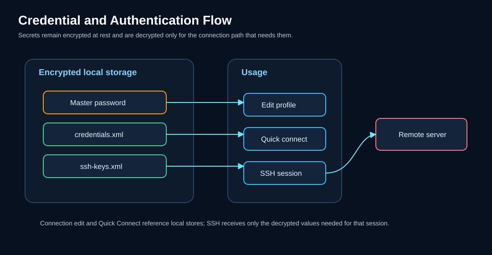

Sicherheit: Anmeldeinformationen, Schlüssel und Verschlüsselung¶
KorTTY schützt Ihre sensiblen Daten mit branchenüblicher Verschlüsselung und zentraler Schlüsselverwaltung. Alle Verbindungskennwörter, SSH-Schlüsselpassphrasen und die Speicherung von Anmeldeinformationen verwenden die AES-256-GCM-Verschlüsselung, die von einem Hauptkennwort abgeleitet wird, das beim ersten Start erstellt wird.

Master-Passwort¶
Beim ersten Start werden Sie aufgefordert, ein Master-Passwort (mindestens 6 Zeichen) zu erstellen, das alle gespeicherten Geheimnisse verschlüsselt.
Setup¶
- Geben Sie ein Passwort ein (der Feldrand wird grün, wenn die Länge ausreichend ist, rot, wenn die Länge zu kurz ist). Der Stärkeindikator 2. A zeigt die Passwortqualität an; Bei schwachen oder gebräuchlichen Passwörtern wird eine Warnung angezeigt, die Sie bei Bedarf jedoch bestätigen können.
- Bestätigen Sie das Passwort.
- Klicken Sie auf Setup.
At-Rest-Verschlüsselung¶
Das Master-Passwort selbst wird mit PBKDF2 gehasht (310.000 Iterationen) und niemals im Klartext gespeichert. Das Salz und der Hash werden in ~/.kortty/master.key gespeichert.
Bei nachfolgenden Starts werden Sie von KorTTY aufgefordert, das Master-Passwort einzugeben, um verschlüsselte Daten zu entsperren. Wenn Sie Master-Passwort beim Start anfordern in Einstellungen > Sicherheit deaktivieren, wird diese Eingabeaufforderung ausgeblendet, aber auf gespeicherte Passwörter kann erst dann zugegriffen werden, wenn Sie das Master-Passwort manuell eingeben.
Optionale automatische Anmeldung schwächt den Schutz im Ruhezustand
Die zweite Sicherheitsoption, Master-Passwort-Eingabeaufforderung beim Start deaktivieren (automatische Anmeldung), entfernt die Eingabeaufforderung ebenfalls, hält den Tresor jedoch vollständig nutzbar: korTTY schreibt Ihr Master-Passwort in ~/.kortty/master.autounlock – Nur verschleiert, nicht verschlüsselt, mit Dateiberechtigungen nur für den Besitzer – und wird bei jedem Start automatisch entsperrt. Der Verschleierungsschlüssel ist in die Anwendung eingebettet, sodass Dateiberechtigungen die einzige wirkliche Grenze darstellen. jeder, der lesen kann ~/.kortty oder ein Backup kann alle gespeicherten Geheimnisse entschlüsseln. Bei einem brandneuen Profil führt die Option ein Standard-Master-Passwort ohne Dialog aus. korTTY fragt vor der Aktivierung nach einer Bestätigung, es ist für Wegwerf-/Testumgebungen gedacht und a Richtlinienkonfiguration das ein Master-Passwort erfordert, deaktiviert es. Einzelheiten: Sicherheitseinstellungen.
Note
Wenn Sie das Master-Passwort verlieren, können verschlüsselte Daten nicht wiederhergestellt werden. Löschen Sie master.key und credentials.xml, starten Sie neu, legen Sie ein neues Master-Passwort fest und geben Sie Ihre Passwörter erneut ein.
Verschlüsselungsmodell¶
Alle vertraulichen Daten im Ruhezustand werden mit AES-256-GCM verschlüsselt:
- Algorithmus: AES-256-GCM (Galois/Counter-Modus)
- Schlüsselableitung: PBKDF2WithHmacSHA256 mit 310.000 Iterationen
- IV Länge: 12 Bytes (zufällig pro Verschlüsselung)
- Authentifizierungs-Tag: 128 Bit (integrierte Integritätsüberprüfung)
- Salt-Länge: 32 Bytes (zufällig pro Master-Passwort-Einrichtung)
Jeder verschlüsselte Wert kombiniert einen zufälligen IV mit dem Chiffretext, der zur Speicherung als Base64 codiert wird.
Anmeldeinformationsverwaltung¶
Speichern Sie zentralisierte Benutzernamen-/Passwort-Anmeldeinformationen, die über mehrere Verbindungen hinweg wiederverwendet werden können.
Öffnen des Managers¶
Menü: Verwaltung > Anmeldeinformationen verwalten
Anmeldeinformationen hinzufügen¶
- Klicken Sie auf Hinzufügen.
- Ausfüllen:
- Name – Beschreibender Bezeichner
- Benutzername – Login-Benutzername
- Passwort – Mit AES-256-GCM verschlüsselt gespeichert
- Umgebung – Produktion, Entwicklung, Test oder Staging
- Servermuster (optional) – Glob-Muster (z. B.
*.example.com,10.0.0.*) für den automatischen Abgleich von Anmeldeinformationen mit Verbindungen - Beschreibung (optional) – Freitextnotizen
- Klicken Sie auf OK.
Anmeldeinformationen in Verbindungen verwenden¶
Beim Erstellen oder Bearbeiten einer Verbindung:
- Gehen Sie zur Registerkarte Verbindung.
- Wählen Sie im Dropdown-Menü Anmeldeinformationen eine gespeicherte Anmeldeinformation aus.
- Benutzername und Passwort werden automatisch ausgefüllt.
Das folgende Diagramm zeigt, wie Anmeldeinformationen und SSH-Schlüssel vom verschlüsselten Speicher zu aktiven Verbindungen fließen:

Eigenschaften¶
- Umgebungsspezifisch – Anmeldeinformationen nach Bereitstellungsumgebung organisieren
- Server Pattern Matching – Anmeldeinformationen automatisch passenden Servern zuweisen
- Verschlüsselter Speicher – Passwörter werden mit AES-256-GCM verschlüsselt
- Automatische Nutzung – Wählen Sie Anmeldeinformationen direkt in den Verbindungseinstellungen aus
SSH Schlüsselverwaltung¶
Zentralisierte Verwaltung privater SSH-Schlüssel mit verschlüsselten Passphrasen.
Öffnen des Managers¶
Menü: Verwaltung > SSH-Schlüssel verwalten
Schlüssel hinzufügen¶
- Klicken Sie auf Hinzufügen.
- Wählen Sie den Pfad zu Ihrer privaten SSH-Schlüsseldatei.
- (Optional) Geben Sie die Passphrase ein – sie wird verschlüsselt und gespeichert.
- Klicken Sie auf OK.
Hauptmerkmale¶
- Zentralisierte Verwaltung – Verwalten Sie alle SSH-Schlüssel an einem Ort
- Verschlüsselte Passphrasen – Schlüsselpassphrasen werden mit AES-256-GCM verschlüsselt gespeichert
- Schlüsselkopie – Verwenden Sie In Benutzerverzeichnis kopieren, um Schlüssel nach
~/.kortty/ssh-keys/zu kopieren; Kopierte Schlüssel werden in verschlüsselte Backups einbezogen und nur mit Eigentümerberechtigungen wiederhergestellt - Platzhaltersuche – Schnelle Suche nach Schlüsseln mithilfe von
*-Mustern - Automatische Nutzung – Wählen Sie Schlüssel direkt in den Verbindungseinstellungen aus
Verwenden von Schlüsseln in Verbindungen¶
Beim Erstellen oder Bearbeiten einer Verbindung:
- Gehen Sie zur Registerkarte Verbindung.
- Wählen Sie Privater Schlüssel als Authentifizierungsmethode.
- Wählen Sie den gewünschten Schlüssel aus der Dropdown-Liste SSH-Schlüssel aus.
- Der Schlüsselpfad und die Passphrase werden automatisch ausgefüllt.
Interaktive SSH-Hostschlüssel-Vertrauensstellung¶
Terminal- und SFTP-Verbindungen, einschließlich des von Mosh verwendeten SSH-Bootstraps, nutzen einen TOFU-Verifizierer (Trust-on-First-Use), der durch normalisierten Hostnamen und Port verschlüsselt ist. Bei der ersten Verwendung zeigt korTTY den Serverschlüsselalgorithmus und den OpenSSH SHA-256-Fingerabdruck an; Überprüfen Sie vor der Annahme, dass es außerhalb des Bandes liegt. Die Bestätigung lautet standardmäßig Nein. Ein zuvor vertrauenswürdiger passender Schlüssel wird stillschweigend akzeptiert, während ein geänderter Schlüssel mit den erwarteten und angebotenen Fingerabdrücken fest blockiert wird und nie automatisch erneut versucht wird.
Interaktive Pins werden atomar in ~/.kortty/ssh-host-keys.properties geschrieben; Eine Companion-Sperre koordiniert gleichzeitige korTTY-Prozesse. Dieser Speicher unterscheidet sich von den verbindungs-ID-basierten Hostschlüssel-Pins des JobScheduler in job-scheduler.xml, die die unbeaufsichtigte SSH-, SFTP- und Rsync-Ausführung schützen.
Lockere Überprüfung des Hostschlüssels¶
Für Labor- oder Wegwerf-Hosts können Sie die Eingabeaufforderung bei der ersten Verwendung deaktivieren und korTTY veranlassen, einen unbekannten Schlüssel stillschweigend zu akzeptieren. Hierbei handelt es sich um eine Akzeptieren-Neu-Lockerung, nicht um blindes Vertrauen: Ein Schlüssel, der sich von dem unterscheidet, der bereits für diesen Host festgelegt wurde, ist immer noch hart blockiert, sodass ein Man-in-the-Middle auf einem Host, mit dem Sie sich zuvor verbunden haben, immer noch abgefangen wird. Es ist standardmäßig deaktiviert und kann in der Reihenfolge der Priorität auf drei Bereiche eingestellt werden:
- Pro Verbindung – das Steuerelement Hostschlüsselüberprüfung im Verbindungseditor des Verbindungsmanagers und in der Schnellverbindung mit drei Zuständen: Standard verwenden (übernehmen), Überprüfen (strikt erzwingen, auch wenn die Gruppen- oder globale Einstellung dies gelockert hat) und Nicht überprüfen.
- Pro Gruppe – Klicken Sie im Verbindungsmanager mit der rechten Maustaste auf eine Gruppe und aktivieren Sie Hostschlüsselüberprüfung deaktivieren; Es gilt für jede Verbindung in der Gruppe, die erbt.
- Global – Einstellungen → Terminal → Hostschlüsselüberprüfung für alle Verbindungen deaktivieren, der Basisstandard für jede Verbindung, die auf beiden oben genannten Ebenen erbt.
Der eigene Hostschlüssel eines Jump-Servers wird durch keines davon gelockert – die Bastion wird immer streng überprüft.
GPG Schlüsselverwaltung¶
Verwalten Sie GPG-Schlüssel für die Backup-Verschlüsselung und die Verbindungs-/Snippet-Exportverschlüsselung.
Öffnen des Managers¶
Menü: Verwaltung > GPG-Schlüssel verwalten
Schlüssel hinzufügen¶
- Manuelle Eingabe – Klicken Sie auf Hinzufügen, um die Schlüssel-ID und die E-Mail-Adresse manuell einzugeben.
- Systemimport – Klicken Sie auf Aus GPG importieren, um Schlüssel aus dem GPG-Schlüsselbund Ihres Systems zu importieren.
Bearbeiten und Entfernen von Schlüsseln¶
- Wählen Sie einen Schlüssel aus der Liste aus.
- Klicken Sie auf Bearbeiten, um Details zu ändern, oder auf Löschen, um sie zu entfernen.
Verwenden von Schlüsseln für die Sicherung¶
- Öffnen Sie Einstellungen > Backup.
- Wählen Sie GPG-Verschlüsselung als Verschlüsselungstyp aus.
- Wählen Sie den GPG-Schlüssel aus, der für die Verschlüsselung verwendet werden soll.
GPG-verschlüsselte Backups und Exporte werden als .gpg-Dateien gespeichert und erfordern den gpg-Befehl Ihres Systems und einen verwendbaren öffentlichen Schlüssel zur Entschlüsselung.
Gespeicherte Sicherheitsdaten¶
Die folgenden sensiblen und sicherheitsrelevanten Daten werden in ~/.kortty/ gespeichert; Geheime Werte werden verschlüsselt, während öffentliches Verifizierungsmaterial nicht verschlüsselt ist:
| Datei | Inhalt | Verschlüsselung |
|---|---|---|
credentials.xml |
Gespeicherte Benutzername/Passwort-Anmeldeinformationen | AES-256-GCM |
ssh-keys.xml |
SSH-Schlüsselpfade und verschlüsselte Passphrasen | AES-256-GCM |
connections.xml |
Verbindungskennwörter (inline) und Schlüsselpassphrasen (wenn keine SSH-Schlüsselverwaltung verwendet wird) | AES-256-GCM |
ssh-host-keys.properties |
Vertrauenswürdige öffentliche Hostschlüssel für interaktive Terminal-, SFTP- und Mosh-Bootstrap-Verbindungen | Öffentliche Verifizierungsdaten; nicht verschlüsselt |
job-scheduler.xml |
Scheduler-Sudo-Passwörter und Archiv-Passwörter; Journaleinträge schwärzen von KorTTY verwaltete Geheimnisse | AES-256-GCM |
master.key |
Master-Passwort-Hash (PBKDF2, 310.000 Iterationen) und Salt | PBKDF2-Hash nur |
master.autounlock |
Gespeichertes Master-Passwort für die optionale automatische Anmeldung | Nur verschleiert – nicht verschlüsselt; Nur-Eigentümer-Dateiberechtigungen |
global-settings.xml |
AI-Profil-API-Schlüssel, Übersetzungs-API-Schlüssel, optionales Hugging Face-Token | AES-256-GCM |
Best Practices für die Sicherheit¶
Warning
Ausgewählter Terminaltext, der an KI-Dienste gesendet wird, kann vertrauliche Informationen wie Anmeldeinformationen, Hostnamen, Dateipfade, Stack-Traces oder Betriebsdetails enthalten. Bevorzugen Sie für vertrauliche Daten ein integriertes lokales GGUF-Modell oder stellen Sie sicher, dass Sie dem Remote-Endpunkt vertrauen, bevor Sie etwas senden.
Master-Passwort¶
- Verwenden Sie ein sicheres, eindeutiges Master-Passwort (mindestens 12 Zeichen, eine Mischung aus Groß-/Kleinbuchstaben, Zahlen und Symbolen).
- Geben Sie niemals Ihr Master-Passwort weiter.
- Speichern Sie es sicher (Passwort-Manager empfohlen).
SSH-Schlüssel¶
- Schützen Sie private Schlüsseldateien mit einer Passphrase.
- Schlüssel nach
~/.kortty/ssh-keys/kopieren, um sie in verschlüsselte Backups aufzunehmen; Schlüssel, die an ihren ursprünglichen Speicherorten verbleiben, werden nur referenziert und müssen separat migriert werden. - Schlüsseldateiberechtigungen einschränken (z. B.
chmod 600). - Überprüfen Sie den Fingerabdruck eines Hostschlüssels bei der ersten Verwendung über einen vertrauenswürdigen Kanal, bevor Sie ihn akzeptieren. Behandeln Sie eine Warnung bezüglich eines geänderten Schlüssels als einen möglichen Serverneuaufbau, einen DNS-Fehler oder einen Man-in-the-Middle-Angriff und untersuchen Sie ihn, anstatt die Verbindung wiederholt wiederherzustellen.
JobScheduler¶
- Host-Schlüssel-Pinning: Host-Schlüssel werden standardmäßig für unbeaufsichtigte SSH-/SFTP-/Rsync-Jobs gepinnt, um Man-in-the-Middle-Angriffe zu verhindern. Diese Verbindungs-ID-Pins sind absichtlich von den normalisierten Endpunkt-Pins getrennt, die von interaktiven Terminal-/SFTP-Sitzungen verwendet werden.
- Sudo-Passwörter: Scheduler-Sudo-Passwörter werden verschlüsselt und in
~/.kortty/job-scheduler.xmlgespeichert. - Journal-Schwärzung: Job-Journaleinträge schwärzen von KorTTY verwaltete Geheimnisse vor der Persistenz (der geschwärzte Modus ist die Standardeinstellung; der vollständige Modus speichert nicht geschwärzte Ausgaben).
Backup-Verschlüsselung¶
- Verschlüsseln Sie Backups immer entweder mit passwortgeschützter ZIP- oder GPG-Verschlüsselung.
- Speichern Sie Sicherungsdateien an einem sicheren Ort.
- Testen Sie die Wiederherstellungsverfahren regelmäßig, um sicherzustellen, dass Backups verwendbar sind.
AI-Integration¶
- API-Schlüssel für KI-Endpunkte werden mit Ihrem Master-Passwort verschlüsselt.
- Das optionale Hugging Face-Token ist mit dem Master-Passwort verschlüsselt und wird nur für genehmigte Modellsuch-/Downloadanfragen an den vertrauenswürdigen Hugging Face-Host verwendet.
- Jeder integrierte
llama-serverbindet nur an127.0.0.1an einem zufälligen Port und erfordert einen generierten lokalen API-Schlüssel. Der Offline-Modus ist obligatorisch; Web-UI-, Agent-, UI-MCP-Proxy-, Slot-Endpunkt- und geerbte Serveroptionsüberschreibungen sind deaktiviert. - GGUF-Downloads erfordern eine unveränderliche Repository-Revision und genaue SHA-256-Metadaten. Laufzeitindizes erfordern eine Ed25519-Signatur, und jede Laufzeit-ZIP-Datei wird vor der sicheren Extraktion anhand ihrer signierten Größe und SHA-256 überprüft. Offizielle Anwendungs-Builds betten nur das Vertrauensstammverzeichnis des öffentlichen Laufzeitkanals ein; Ein fehlender oder ungültiger Schlüssel schlägt fehl, bevor eine Aktualisierungsanforderung erfolgt, während der signierende private Schlüssel im vom Menschen gesendeten Promotion-Workflow isoliert bleibt.
- Signierte Laufzeitabhebungen sind dauerhaft und werden nicht geschlossen. Ein verifizierter Index fügt zurückgezogene Laufzeit- und Installations-IDs zu
llm/runtime/revoked-v1hinzu, markiert jedes installierte Paket, löscht einen passenden aktiven Zeiger, stoppt seine Sidecars, entfernt es aus dem fehlerfreien Rollback-Verlauf und stellt betroffene Modellbindungen unter Quarantäne. Sowohl das Installationsprogramm als auch der Prozessstarter lehnen diese Pakete ab, auch nach einem unterbrochenen Update. Überprüfungen, bei denen nur eine Benachrichtigung erfolgt, erzwingen eine Auszahlung, ohne dass der angebotene Ersatz stillschweigend installiert wird. Off stellt keine Indexanfrage und erfährt daher bis zu einer expliziten oder aktivierten Prüfung keine neue Entnahme. - Eine neu aktivierte Laufzeit wird nicht in den fehlerfreien Verlauf hochgestuft, nur weil die begrenzte
--version-Prüfung bestanden wurde. Es bleibt ausstehend, bis der erste echte GGUF-gestützte authentifizierte API-Start erfolgreich ist; Wenn dieser Start fehlschlägt, wird der Kandidat entfernt und das neueste fehlerfreie, nicht widerrufene Paket wiederhergestellt bzw. erneut gebunden, sofern eines vorhanden ist. - -Modellempfehlungen und die automatische Erkennung von Eingabeaufforderungsfamilien können aus einem separaten Ed25519-signierten HTTPS-Katalog aktualisiert werden. Der letzte gültige Cache wird vor der Verwendung erneut überprüft, und eine monotone Sequenz lehnt signierte ältere Wiederholungen oder Versionskollisionen mit gleicher Sequenz vor einem atomaren Hochwasser-Update ab. Ohne den unabhängigen öffentlichen Katalogschlüssel vertraut korTTY weder Netzwerk- noch Cache-Daten und greift auf den integrierten Bootstrap zurück. Das Signieren von Produktionskatalogen und Laufzeiten ist auf die durch Prüfer geschützten GitHub-Umgebungen im Hauptzweig beschränkt. Anwendungsbuilds erhalten nur die öffentlichen Vertrauenswurzeln. Die Profilkonfiguration - AI wird lokal gespeichert; Nur Ihre überprüfte Terminalauswahl oder Eingabeaufforderung wird an den ausgewählten Dienst gesendet. Die eingebettete Inferenz bleibt auf diesem Computer.
- Wissensspeicher-Scanning folgt einer festen Text-Zulassungsliste, validiert Inhalte, lehnt symbolische Links ab und zeigt eine Vorschau an. Nur begrenzte abgerufene Auszüge, nicht der gesamte Wissensspeicher, werden in die Modellaufforderung eingegeben. Diese Auszüge bleiben für integrierte/Loopback-Profile lokal, verlassen jedoch den Computer, wenn ein explizit zugewiesenes Cloud-Profil die Anfrage verarbeitet. Wissensspeicherrollen und persistente Profilzuweisungen sind die Offenlegungsberechtigung des Benutzers.
- Remote-Qdrant-Wissensspeicher erfordern HTTPS; Einfaches HTTP wird nur für Loopback akzeptiert und der optionale API-Schlüssel bleibt durch den Tresor geschützt.
- Der Internetzugriff ist für AI-Profile standardmäßig deaktiviert. nur bei Bedarf aktivieren.
- Snippet-KI-Aktionen nutzen niemals den Internetzugang, selbst wenn dieser im Profil aktiviert ist.
- Die feste Snippet-/Workflow-Diagramm-Anfrage erhält nie Auszüge aus dem Wissensspeicher, selbst wenn an das Profil Speicher angehängt sind – die Diagramm-Eingabeaufforderung wird ausschließlich aus der Quelle erstellt.
Sicherheitsübersicht¶
| Funktion | Implementierung |
|---|---|
| Master-Passwort-Hashing | PBKDF2 mit 310.000 Iterationen |
| Anmeldeinformationsverschlüsselung | AES-256-GCM |
| SSH-Schlüsselpassphrasen | Verschlüsselt mit AES-256-GCM und Master-Passwort |
| Interaktive SSH/SFTP/Mosh-Hostschlüssel | Gemeinsam genutzter normalisierter Host:Port-TOFU, Bestätigung des Fingerabdrucks bei der ersten Verwendung (optional entspannt, um „Neu“ zu akzeptieren), stille exakte Übereinstimmung, harte Blockierung bei Änderung |
| AI-API-Schlüssel | Verschlüsselt mit AES-256-GCM und Master-Passwort |
| Eingebetteter llama.cpp | Nur-Loopback-Zufallsport, generierter API-Schlüssel, Offline-/gehärtete Server-Flags, Anforderungsleasing |
| GGUF/Laufzeit-Lieferkette | Unveränderliche Revisionen, SHA-256-Verifizierung, signierter Laufzeitindex, dauerhafte Sperrquarantäne, Rollback nach fehlgeschlagener Integritätsprüfung oder erstem echten API-Start |
| Modell-/Prompt-Katalog | Unabhängiger Ed25519 Trust Root, striktes Schema, monotone Anti-Replay-Sequenz, erneut verifizierter Atomcache, geschützte menschliche Förderung, Bootstrap-Fallback |
| RAG-Quellenaufnahme | Zentrale Zulassungsliste, UTF-8/PDF-Inhaltsprüfungen, kein Symlink-Traversal, überprüfte Vorschau |
| RAG-Eingabeaufforderungskontext | Feste Abrufgrenzen, stabile Quellmarkierungen, explizit nicht vertrauenswürdiger Wrapper, explizite profilbasierte lokale/Cloud-Offenlegung |
| Optionale automatische Anmeldung | Master-Passwort verschleiert gespeichert in master.autounlock mit Nur-Eigentümer-Berechtigungen; Standardmäßig deaktiviert, Bestätigung erforderlich, blockiert durch eine Richtlinie, die ein Master-Passwort erfordert |
| Backup-Verschlüsselung | AES-256 passwortgeschützt ZIP- oder GPG-verschlüsselt (ältere ZIP-verschlüsselte Backups bleiben importierbar) |
| JobScheduler-Geheimnisse | Sudo- und Archivkennwörter verschlüsselt; Journal-Schwärzung standardmäßig aktiviert |
| JobScheduler-Hostschlüssel | Hostschlüssel-Pinning standardmäßig für unbeaufsichtigte SSH-/SFTP-/Rsync-Jobs erforderlich |
| Anmeldeinformationen | Niemals im Klartext gespeichert |
Ändern des Master-Passworts¶
So ändern Sie Ihr Master-Passwort (wodurch alle gespeicherten Geheimnisse mit einer neuen Ableitung neu verschlüsselt werden):
- Öffnen Sie Einstellungen > Sicherheit.
- Klicken Sie auf Master-Passwort ändern.
- Geben Sie Ihr aktuelles (altes) Master-Passwort ein.
- Geben Sie das neue Master-Passwort zweimal ein.
- Jedes Master-Passwort-geschützte Geheimnis wird automatisch mit dem neuen Schlüssel neu verschlüsselt: Verbindungs- und Jump-Server-Passwörter, SSH-Schlüssel-Passphrasen, gespeicherte Anmeldeinformationen, AI-Profil-API-Schlüssel und die globalen AI-/Übersetzungs-/Hugging-Face-Schlüssel, RAG-Wissensspeicher-Geheimnisse und JobScheduler-Sudo-/Archive-Passwörter. Die Änderung erfolgt stufenweise – das neue Passwort wird erst übernommen, wenn alle Filialen migriert wurden, sodass bei einem Fehler auf halbem Weg das alte Passwort in Kraft bleibt. Einzelne Geheimnisse, die nicht migriert werden können, bleiben unberührt, werden in der Ergebnisnachricht gezählt und im Protokoll vermerkt; Geben Sie diese manuell erneut ein.
Konfigurationsdateien-Referenz¶
Alle KorTTY-Daten werden unter ~/.kortty/ gespeichert. Wichtige sicherheitsrelevante Dateien:
~/.kortty/
├── master.key # Master password hash and salt (PBKDF2)
├── master.autounlock # Optional auto-login password (obfuscated, owner-only permissions)
├── credentials.xml # Encrypted credentials (AES-256-GCM)
├── ssh-keys.xml # SSH key paths and encrypted passphrases
├── gpg-keys.xml # GPG keys for backup/export encryption
├── connections.xml # Connection passwords and key passphrases
├── ssh-host-keys.properties # Interactive Terminal/SFTP/Mosh host-key pins
├── global-settings.xml # AI API keys and other encrypted settings
├── llm/models.xml # Model paths and typed launch settings (no model contents)
├── llm/runtime/ # Regenerable native packages; excluded from backup
├── llm/catalog/ # Regenerable signed-catalog cache; excluded from backup
├── llm/run/ # Temporary per-process API keys/logs; excluded from backup
├── rag/stores.json # Knowledge-store/source configuration
├── rag/stores/ # Regenerable HNSW snapshots; excluded from backup
├── job-scheduler.xml # JobScheduler sudo/archive passwords (encrypted)
├── kortty.log # Application log
└── history/ # Compressed terminal session history